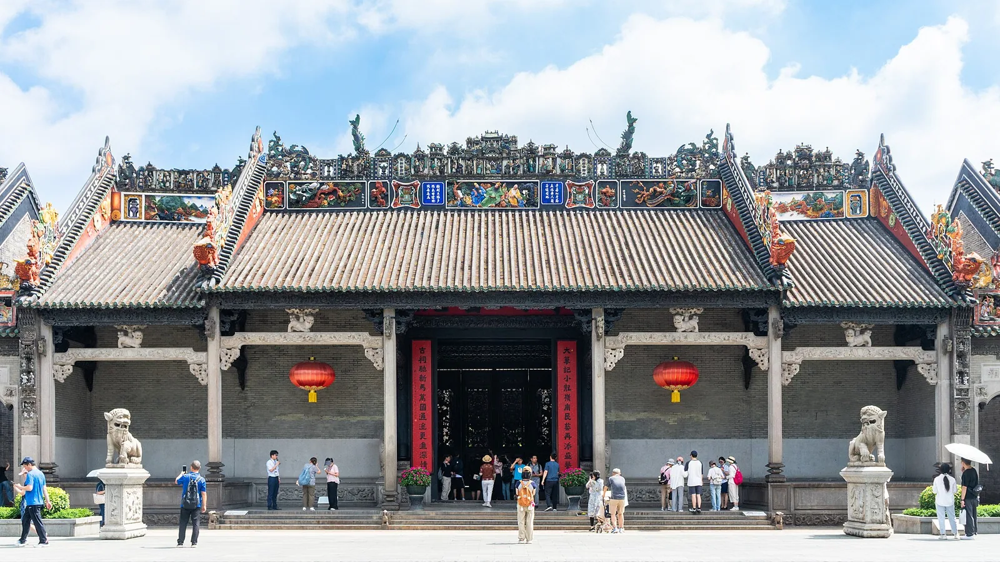

四星/钻住宿档
- 整团预算价 · 2位成人
- ¥12,700 / 团
- 人均预算价
- ¥6,350 / 人
4晚 · 1间客房；房型、早餐及优惠条件见下方住宿明细。
围绕文化慢生活设计的广州5天私家团方案，串联越秀公园、南越王博物院、陈家祠、永庆坊、荔枝湾等目的地点位。仅为您和同行亲友独立成团，不与陌生游客拼团。出行日期、游览节奏、用车和导览服务可按需求协商；最终包含项目、预约与费用以确认报价为准。
咨询定制行程与报价整团与人均预算价 ↓
预算参考价，以实际出行日期核价为准
以下金额为人民币，按2位成人独立成团、1间客房、5天4晚测算。人均价为整团价÷2，不是拼团价；两档采用相同的独立7座商务车及中文导游预算，仅调整住宿。儿童、加床、单房及不同人数须重新核价。
4晚 · 1间客房；房型、早餐及优惠条件见下方住宿明细。
4晚 · 1间客房；房型、早餐及优惠条件见下方住宿明细。
编制日期：2026年11月8日。本表为预算测算，非供应商确认报价、非正式成交价，酒店、车辆与导游均未预订。酒店仅以2026年11月8日入住、11月9日退房的携程展示价作为固定每晚单价投影；后续每一晚尚未按连续日期逐日查价。会员、首单、限时优惠及税费条件仍需核对。
市内7座900元/天参考公开价；黄埔古港日1100元为距离及通行预算假设。中文导游、杂费、司导餐宿、策划费及风险预留均为测算假设，不是供应商确认的结算价。计算方式：基础测算成本×1.10×1.10，整团向上取整至100元。实际出行日期、人数、车程、工时和库存变化后需重新报价。
拟定过夜城市：广州 → 广州 → 广州 → 广州。云南跨城线路采用行程内包车预算，不含额外机票或火车票。
星级及钻级按酒店平台标识区分，钻级不等于官方星级认证。最终包含项目、税费、可用库存、总额和取消条款，以正式确认的书面报价为准。
独立成团，不拼团，按同行客人需求定制
五天按区域放慢节奏
拟议餐饮体验可按口味协商
适合家庭或亲友独立成团
越秀公园 → 南越王博物院
第一段｜越秀公园：结合公园环境与广州城市历史进行游览。
后续安排｜南越王博物院：按馆方预约、开放及展区安排参观，实际参观展区出行前确认。
本日按私家团节奏游览，可按体力与兴趣增减停留点。停留时间与交通耗时不作未经核实的固定承诺。
用餐：按饮食偏好协商，费用与包含项需确认
交通：独立同行的交通方案需确认，未编造车程或班次
陈家祠 → 永庆坊
第一段｜陈家祠：欣赏木雕、石雕与砖雕等岭南建筑装饰，参观范围按实际开放安排。
后续安排｜永庆坊：在西关街巷与更新街区间漫步，不预设演出或工艺课程。
本日按私家团节奏游览，可按体力与兴趣增减停留点。停留时间与交通耗时不作未经核实的固定承诺。
用餐：按饮食偏好协商，费用与包含项需确认
交通：独立同行的交通方案需确认，未编造车程或班次
荔枝湾 → 泮溪酒家（拟议茶点）
第一段｜荔枝湾：在水岸景观与传统街巷间体验西关风貌。
后续安排｜泮溪酒家（拟议茶点）：可选择茶点体验，接待时段、菜单、订位与费用须提前确认。
本日按私家团节奏游览，可按体力与兴趣增减停留点。停留时间与交通耗时不作未经核实的固定承诺。
用餐：按饮食偏好协商，费用与包含项需确认
交通：独立同行的交通方案需确认，未编造车程或班次
沙面 → 西堤历史建筑外观
第一段｜沙面：以欧式历史建筑外观和街景为主，不承诺建筑内部开放。
后续安排｜西堤历史建筑外观：以粤海关旧址等历史建筑外观为参观对象，不承诺入内。
本日按私家团节奏游览，可按体力与兴趣增减停留点。停留时间与交通耗时不作未经核实的固定承诺。
用餐：按饮食偏好协商，费用与包含项需确认
交通：独立同行的交通方案需确认，未编造车程或班次
东山口 → 太古仓码头
第一段｜东山口：以街区风貌和历史建筑外观漫步为主。
后续安排｜太古仓码头：以码头历史风貌与滨水空间为主。
本日按私家团节奏游览，可按体力与兴趣增减停留点。停留时间与交通耗时不作未经核实的固定承诺。
用餐：按饮食偏好协商，费用与包含项需确认
交通：独立同行的交通方案需确认，未编造车程或班次
以下为登录携程后查询到的具体房型展示价，单位为人民币/间/晚。仅作住宿预算参考，不是本线路全程住宿价或私家团总价；酒店未预订。星与钻以各酒店标识区分，钻级不等于官方星级认证。
会员、首单及限时优惠因账户和房量而异。所记展示价未在订单结算页确认税费，含税情况、额外费用及最终应付金额需在预订时核实。不同出行日期须重新报价。
查询时间：2026年11月8日 19:58–20:03（北京时间）。当日查询参考，价格随时变化。
携程四星标识
¥487 /间/晚 · 当日查询参考
粤逸大床房-悠然旅居，闲雅之境
携程五星标识
¥1,068 /间/晚 · 当日查询参考
标准大床房
实际服务包含项以书面报价确认；本页为可定制行程方案。
未在确认报价中列明的住宿、餐饮、交通、门票及额外体验不作包含承诺。
可协商酒店档次、房型、服务语言、用车与导览安排。
仅为您与同行亲友独立成团，不安排陌生客人拼团。住宿、交通、导览、门票、餐饮等实际包含项目与私家团总价，以按出行日期和人数出具的书面报价为准。
这是为您和同行亲友独立安排的私家团，不与陌生游客拼团。出行人数、服务语言、用车和导览需求会在报价时逐项确认。
可以协商调整，但热门景区和场馆受实名预约、开放安排、天气与交通影响。公布的行程是建议方案，不代表门票、索道或特别活动已经预订成功。
酒店会结合入住/退房日期、人数、房间数、房型及酒店档次核对。携程酒店价仅在同日期和同条件下作为参考，早餐、取消和税费条件一并确认；不将未核实酒店价写成固定团费。
当前页面为可定制行程方案。住宿、交通、门票、用餐及导览等包含项目与最终金额，以按出行日期和实际人数提供的书面报价为准，不预设尚未确认的包含项。
景点顺序为可调整的私家团建议方案；实际开放、预约、天气与交通安排须在出行前复核。酒店价格来源见住宿参考价栏目。